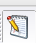

Data Mining using Rapid Miner and Weka involves working on a data set. A data set is a file having a specific format consisting of a set of information on which we can apply data mining algorithms. Both Rapid Miner and Weka support various file formats for data sets.
Pre-processing is one of the important step of Data Mining. As mentioned above, a data set consists of large set of information which might be difficult to understand. Preprocessing involves converting the data in a data set into understandable format. It usually is used to remove errors, inconsistent and incomplete data.
Let us consider a sample data set of tennis statistics for implementing classification and clustering algorithms in Rapid Miner and Weka. The tennis data set is a csv(comma separated value) file which consists information about grandslam statistics. Both, Rapid Miner and Weka support .csv format.
Step-by-step Explaination of pre-processing along with Visual Steps for the tennis data set in Weka and Rapid Miner has been provided below.
Start Rapid Miner Studio
Select the Design perspective 
Select FILE-> New Process
Select Import Data-> Import CSV file
An Import Configuration wizard will open. You can create a new repository in the repository tab and can give any name of your choice.
From Operators tab, Select Import->Data. Select Read CSV and drag-and-drop it on the Process window.
Alternatively, from the Repositories tab, you can select the repository created and drag-and-drop it.
In the Parameters tab, select Import Configuration Wizard.
Step 1: Select the location of the file.
We are considering the CleanTennis.csv file which was stored on Desktop.
Step 2: Select Comma "," from the column separation field.
Step 3: Click Next.
Step 4: You can rename or deselect any attributes you do not want and can assign roles to the attributes.
After doing so , click Finish.
Start Weka.
From the Weka GUI Chooser, Select Explorer as the Application.
Step 1: In the Preprocess tab, Select Open File
Select your dataset.
Step 2: From Filters tab, Select any filters you want to add to the data set.
Weka allows supervised and unsupervised filters on attributes and instances.
In our example, we have not selected any filter.
Step 3: Select the attributes from the data set you want to keep for analysis.
You can remove some attributes depending upon your requirements.
In this example, we have selected all attributes for sample visualization.
Again, depending on your needs you can select number of attributes you want for the implementation.
Classification is a process of predicting information based on certain provided information. Generally, the outcome of classification algorithms is based on the given input. A training set is used for prediction whereas the output is called as the prediction attribute.
We can apply classification and clustering algorithms to implement data mining on this tennis data set using various data mining tools.
Step-by-step explaination of implementation of each process in Weka and Rapid Miner has been provided below.
To learn more about classification algorithms in detail before starting with the actual implementation, Click here!
Naive Bayes is one of the algorithms used to perform classification of data.
It is supported by Rapid Miner and Weka, although the results vary in both of these tools.
We will consider the same sample Tennis data set to walk through the steps to implement Naive Bayesian algorithm in Rapid Miner and Weka.
Start Rapid Miner Studio
Perform the steps described in the "Preprocessing" section above.
Select the Naive Bayesian Operator and drag-and-drop it on the Process View.
Check for any problems and fis them using Quick Fix.
You can select any particular attribute as the "label" while working on your data set. In our example, we select "state" ast the label.
Rapid Miner has a operator "Set Role" which cab be used to set role of a particular attribute.
If there are no errors, Select RUN to implement the process.
The Simple Distribution will be displayed based on our "label" attribute, i.e. "state" attribute in our sample example.
By default, the result is displayed in Text View.
Other visualisation options provided by Rapid Miner-
-Plot View
-Distribution Table
Start Weka
Perform the steps described in the "Preprocessing" section above.
Go to the Classify tab and select NaiveBayes as the classifier.
Depending on which classification algorithm you want to implement, select the particular classifier.
Double click on the classifier to open the Naivebayes ObjectEditor.
In our example, we select all the default properties.
Now, select one attribute to be the "label" for classification.
We select "state" as the label in our example.
After selecting the label, click Start to begin the execution of classification algorithm
Now, the classification of various attributes based on the label will be displayed in the result screen.
Alternatively, Weka provides options for visualization by right-clicking on the particular algorithm in the Result list.
Clustering is a process of predicting information based on certain provided information. Generally, the outcome of classification algorithms is based on the given input. A training set is used for prediction whereas the output is called as the prediction attribute.
To learn more about Clustering first before going ahead with the actual implementation of clustering algotihms in Weka or Rapid Miner, Click here!
K-Means is an unsupervised clustering algorithm used to classify a data set through certain number of clusters.
We will consider the same sample Tennis data set to walk through the steps to implement K-means algorithm in Rapid Miner and Weka.
Start Rapid Miner Studio
Perform the steps described in the "Preprocessing" section above.
Depending on the data set, you will have to do additional preprocessing in Rapid Miner to implement KMeans clustering.
For the sample dataset, we select two additional operators based on the quick fix functionality.
1. Replace Missing Values
2. Nominal to Binary
Drag and drop these operators on the process view. You will have to select operators based on your dataset requirements.
From the Operators tab, Select K-Means operator from the Clustering and Segmentation category and drag-and-drop it on the Process view.
In Parameters View, set number of clusters K as 4. Set max runs as 10 which is the number of iterations.
Connect the out port of each operator to next operator and check for any errors using Quick Fix.
If there are no errors, Select RUN to implement the process.
Cluster assignment would be displayed in Result Overview.
Rapid Miner provides a number of visualization options using,
1. Text View
2. Folder View
3. Graph View
4. Centroid Table/ Centroid Plot View
In our example, we have used Balloon Visualization in the Graph View display.
There are a number of other useful Visualations like Tree, Radial, Circle, etc. available which you can try while your implementation.
Start Weka Explorer
Perform the steps described in the "Preprocessing" section above.
Select any filter if you want to apply to your dataset from the Filters option before applying the clustering algorithm.
From the Cluster tab, select SimpleKMeans from the list of available clustering algorithms.
Number of supported algorithms depends on the dataset.
Double click to Open the ObjectEditor.
Assign K which is the number of clusters.
In our example, Set K=4 (4 clusters).
Choose the distance function and the maximum number of iterations.
Let the distanceFunction be EuclideanDistance and maximum iterations be 10.
You can change these properties according to your requirements.
Click Start to start the implementation.
The cluster assignments and output can be viewed in the Clusterer Output window.
Alternatively from Result list,
Right click and select Visualize cluster assignments to view the cluster assignments graphically.
In our example, 4 different colors will be assigned to 4 clusters and displayed according to cluster means as a graph.
Weka does not have a number of different visualisation display methods similar to Rapid Miner.